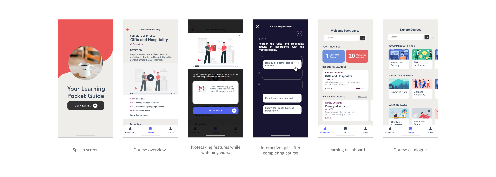

How might we...
HMW design relevant and contextual learning experiences to increase knowledge retention so that employees can make more informed compliance decisions?
Reimagining the learning experience
I started off the ideation workshop by walking key stakeholders through the problem statement and research insights.
With a simple Crazy 8s exercise, I asked each team to share back their sketches and dot vote on their favourite ideas.
Mobile pocket learning guide
This design addresses two main pain point areas: making learning accessible and increasing knowledge retention.
With a pocket guide, employees can easily access learning on-the-go as they are commuting into work, for example.
While everyone learns differently, having multi-modal content responds to employees' different learning modes - learn by listening (audio), by watching (video), by doing (taking notes or trying it out), or all of the above.
When employees are engaged, they are much more likely to retain their learning.
Finally, the content needed to be revisited to use more relevant examples employees can relate to.

Proof of concept design for the mobile learning pocket guide.
A universal learning framework
I recently tackled a similar problem space in a different domain where customers didn't retain any learning and as a result, constantly relied on support teams.
Reflecting on all the user research I've done, I noticed the same emerging themes around motivation, learning context (desktop vs on-the-go) and modes (learning by reading, watching and/or doing). These behaviours build the foundation to engagement and knowledge retention.
Putting all this together, this helped me shape a learning framework which I now use to design other learning experiences applicable to any other domain.
Check out more portfolio stories: